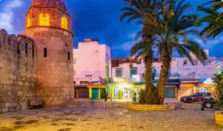
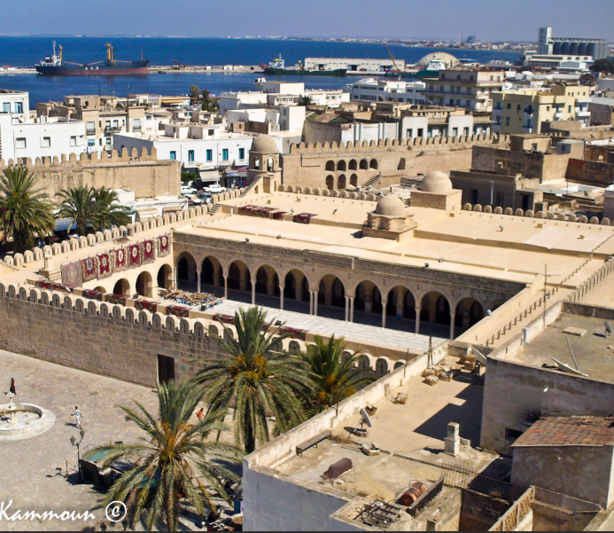
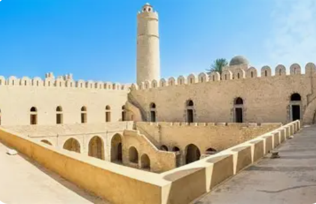
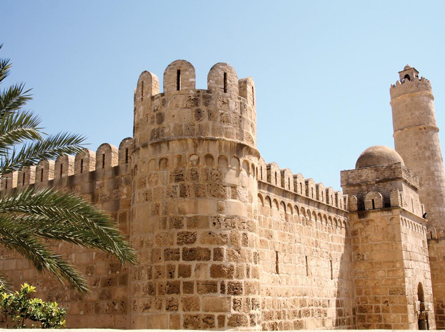
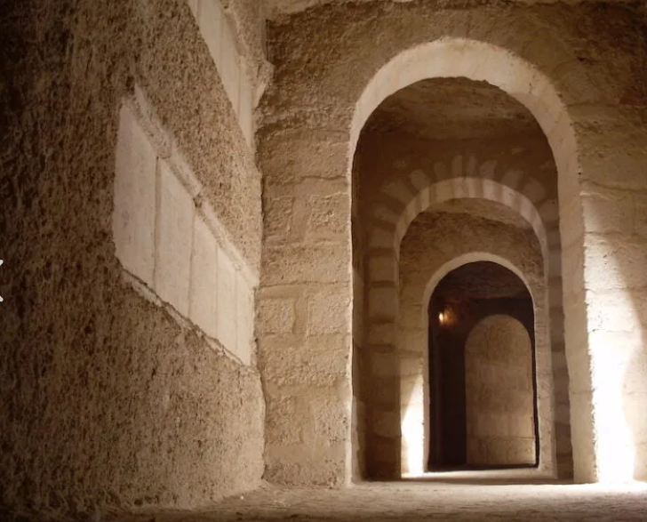

La Perle du Sahel

Sousse est un gouvernorat situé sur la côte est de la Tunisie, au cœur du Sahel tunisien. C'est une région historique et touristique majeure du pays.
La ville de Sousse, chef-lieu du gouvernorat, est la troisième plus grande ville de Tunisie. Elle est célèbre pour sa médina classée au patrimoine mondial de l'UNESCO et ses magnifiques plages.
Le gouvernorat combine parfaitement tradition et modernité, avec un riche patrimoine historique et une économie touristique florissante.
Sousse est une destination touristique majeure avec ses magnifiques plages de sable fin et ses hôtels de luxe.
La médina de Sousse, classée UNESCO, est un joyau architectural avec ses remparts et ses souks authentiques.
Une station balnéaire moderne avec un port de plaisance, des terrains de golf et des centres de loisirs.
Réputée pour son artisanat traditionnel, notamment la poterie, les tapis et les bijoux en argent.

Construite au IXe siècle, cette mosquée est un exemple remarquable de l'architecture islamique médiévale. Elle ressemble à une forteresse avec ses tours et ses murs massifs.

Construit en 796, le Ribat est une forteresse militaire et religieuse. C'est l'un des plus anciens et des mieux préservés de la région méditerranéenne.

Une forteresse qui domine la médina, abritant aujourd'hui le musée archéologique avec une collection exceptionnelle de mosaïques romaines.

Un vaste réseau souterrain de 5 km de galeries avec plus de 15 000 tombes chrétiennes datant du IIe au IVe siècle.